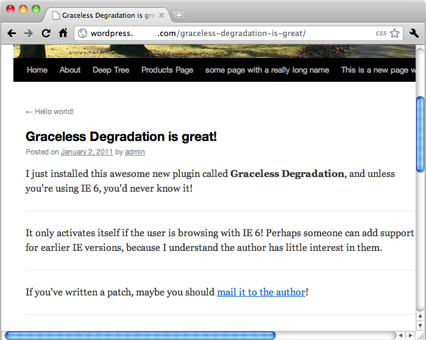
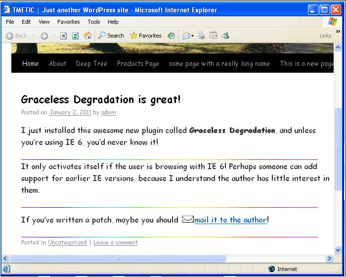

With all this talk of graceful browser degradation, who is speaking for the other side?
Graceless Degradation is a Wordpress plugin that gives visitors still using Internet Explorer 6 an appropriate user experience.
Here's your expected, graceful Wordpress experience using Mac OS X and Google's Chrome browser:

Here's the same page using Windows XP with Internet Explorer 6:

Just download the plugin, tarball or zip file (your choice!), unpack it under wp-content/plugins, and activate the plugin in your Wordpress console.
That's it! Graceless Degradation has no moving parts or sharp edges.
Dan Rench. I'm a freelance programmer from Shermerville, IL, USA.